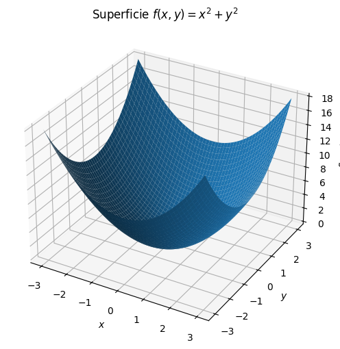
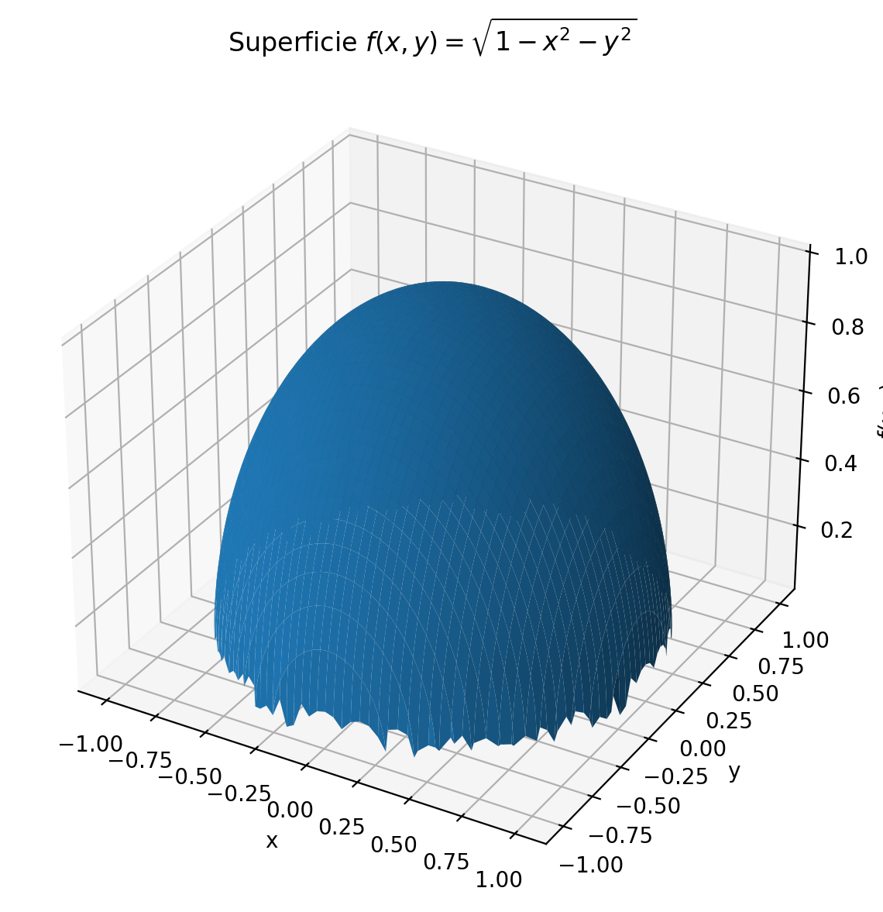
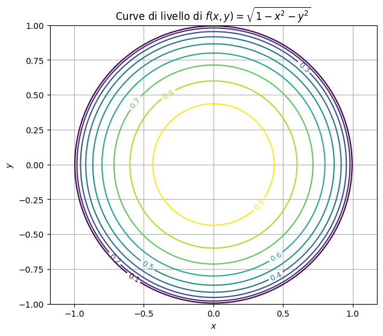
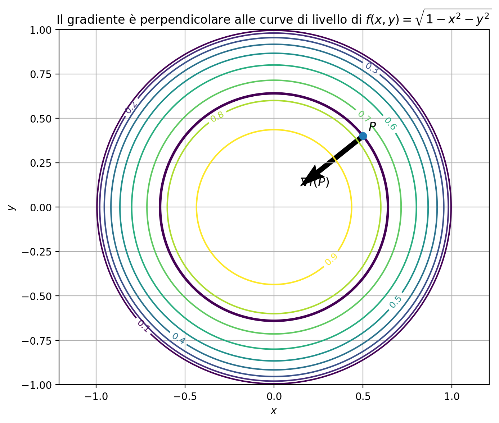

Calcolo multivariato#
Introduzione al calcolo multivariato#
In molti problemi dell’informatica e dell’analisi dei dati una quantità dipende da più variabili contemporaneamente. Per esempio:
il tempo di esecuzione di un algoritmo può dipendere dalla dimensione dell’input e dal numero di processori disponibili;
la probabilità di classificare correttamente un dato può dipendere da diversi parametri del modello;
il valore di una funzione di costo dipende generalmente da tutti i pesi di una rete neurale;
l’intensità di un’immagine digitale dipende dalle coordinate spaziali del pixel.
Per descrivere matematicamente queste situazioni è necessario estendere il concetto di funzione reale di una variabile alle funzioni di più variabili.
Analogamente, i concetti di derivata prima e seconda vengono generalizzati mediante:
le derivate parziali;
il gradiente;
la matrice hessiana;
la matrice jacobiana.
Funzioni di più variabili#
Una funzione reale di due variabili associa a ogni coppia \((x,y)\) appartenente a un insieme \(D\subseteq\mathbb{R}^2\) un numero reale:
Scriveremo
Le variabili \(x\) e \(y\) sono dette variabili indipendenti, mentre \(z\) è la variabile dipendente.
Più in generale, una funzione reale di \(n\) variabili è una funzione
che associa al vettore
il numero reale
Esempio 1#
Consideriamo la funzione
Il dominio è tutto \(\mathbb{R}^2\). Alcuni valori della funzione sono
Il grafico di \(f\) è la superficie
che ha la forma di un paraboloide.
import numpy as np
import matplotlib.pyplot as plt
# Costruzione della griglia
x = np.linspace(-3, 3, 200)
y = np.linspace(-3, 3, 200)
X, Y = np.meshgrid(x, y)
# Valutazione della funzione
Z = X**2 + Y**2
# Grafico della superficie
fig = plt.figure(figsize=(8, 6))
ax = fig.add_subplot(111, projection="3d")
ax.plot_surface(X, Y, Z)
ax.set_xlabel("$x$")
ax.set_ylabel("$y$")
ax.set_zlabel("$f(x,y)$")
ax.set_title(r"Superficie $f(x,y)=x^2+y^2$")
plt.show()

Esempio 2#
La funzione
è definita soltanto quando
Il suo dominio è quindi il disco chiuso
Il grafico rappresenta la semisfera superiore di raggio \(1\).
{kind=link}

Esempio 3#
La funzione
è definita per tutti i punti del piano tranne quelli appartenenti alla retta \(x=y\).
Il dominio è
Una funzione di tre variabili#
Una funzione di tre variabili ha la forma
Per esempio,
associa a ogni punto dello spazio il quadrato della sua distanza dall’origine.
In questo caso non è possibile rappresentare il grafico della funzione nello spazio tridimensionale, perché il grafico sarebbe un sottoinsieme di \(\mathbb{R}^4\).
È però possibile studiare le superfici di livello.
–
Curve e superfici di livello#
Data una funzione
una curva di livello corrispondente al valore \(c\in\mathbb{R}\) è l’insieme dei punti che soddisfano
Le curve di livello permettono di rappresentare una funzione di due variabili nel piano.
Esempio#
Per la funzione
le curve di livello sono descritte dall’equazione
Se \(c>0\), si ottengono circonferenze centrate nell’origine e di raggio \(\sqrt{c}\).
Per \(c=0\) si ottiene soltanto il punto \((0,0)\).
import numpy as np
import matplotlib.pyplot as plt
# Griglia sul dominio [-1,1] x [-1,1]
x = np.linspace(-1, 1, 400)
y = np.linspace(-1, 1, 400)
X, Y = np.meshgrid(x, y)
# La funzione è definita soltanto nel disco unitario
R2 = X**2 + Y**2
Z = np.full_like(X, np.nan)
mask = R2 <= 1
Z[mask] = np.sqrt(1 - R2[mask])
# Valori della funzione corrispondenti alle curve di livello
livelli = np.linspace(0.1, 0.9, 9)
plt.figure(figsize=(7, 6))
curve = plt.contour(X, Y, Z, levels=livelli)
plt.clabel(curve, inline=True, fontsize=9)
plt.xlabel("$x$")
plt.ylabel("$y$")
plt.title(
r"Curve di livello di "
r"$f(x,y)=\sqrt{1-x^2-y^2}$"
)
plt.axis("equal")
plt.grid()
plt.show()

Le curve di livello sono utilizzate, per esempio, nelle mappe geografiche: le curve che uniscono punti aventi la stessa altitudine sono dette isoipse.
Per una funzione di tre variabili
l’equazione
descrive generalmente una superficie di livello.
Per esempio, per
le superfici di livello sono le sfere
di centro l’origine e raggio \(\sqrt{c}\).
Derivate parziali#
Per una funzione di una variabile, la derivata misura la variazione della funzione quando varia la sua unica variabile indipendente.
Per una funzione di più variabili possiamo invece studiare la variazione rispetto a una variabile alla volta, mantenendo fisse tutte le altre.
Sia
La derivata parziale di \(f\) rispetto a \(x\) nel punto \((x,y)\) è definita da
quando tale limite esiste.
Analogamente, la derivata parziale rispetto a \(y\) è
Si utilizzano frequentemente anche le notazioni
Nel calcolo di \(f_x\), la variabile \(y\) viene considerata costante.
Nel calcolo di \(f_y\), la variabile \(x\) viene considerata costante.
Esempio 1#
Consideriamo
La derivata parziale rispetto a \(x\) è
La derivata parziale rispetto a \(y\) è
Nel punto \((1,2)\) si ha
e
Esempio 2#
Sia
Applicando la regola della derivata di una funzione composta, otteniamo
Esempio 3#
Consideriamo la funzione di tre variabili
Le tre derivate parziali sono
Interpretazione geometrica#
Per una funzione \(z=f(x,y)\), la derivata parziale \(f_x(x_0,y_0)\) rappresenta la pendenza della superficie nella direzione dell’asse \(x\), mantenendo \(y=y_0\) costante.
Analogamente, \(f_y(x_0,y_0)\) rappresenta la pendenza nella direzione dell’asse \(y\), mantenendo \(x=x_0\) costante.
Le derivate parziali descrivono quindi come cambia la funzione muovendosi lungo le direzioni degli assi coordinati.
Il gradiente#
Le derivate parziali prime di una funzione scalare possono essere raccolte in un unico vettore, detto gradiente.
Per una funzione
il gradiente è definito come
Nel caso di una funzione di due variabili,
Nel caso di tre variabili,
Esempio#
Consideriamo
Le derivate parziali sono
Pertanto,
Nel punto \((1,-1)\) si ottiene
Interpretazione del gradiente#
Il gradiente ha due importanti proprietà geometriche:
il vettore \(\nabla f(x,y)\) indica la direzione di massima crescita locale della funzione;
il gradiente è perpendicolare alla curva di livello che passa per il punto considerato.
La direzione opposta,
è la direzione di massima diminuzione locale della funzione.
Questa osservazione è alla base del metodo del gradiente discendente, utilizzato in molti algoritmi di ottimizzazione e di apprendimento automatico.
Esempio#
Sia
Il gradiente è
Nel punto \((1,2)\) si ha
La funzione aumenta più rapidamente nella direzione del vettore \((2,4)^T\).
La direzione di massima diminuzione è invece \((-2,-4)^T\), che punta verso l’origine, cioè verso il punto di minimo della funzione.
{kind=link}

Derivate parziali seconde#
Le derivate parziali possono essere ulteriormente derivate.
Per una funzione di due variabili si definiscono le derivate parziali seconde
e le derivate parziali miste
Per esempio,
Se le derivate parziali miste sono continue in un intorno del punto considerato, allora vale il teorema di Schwarz:
Esempio#
Sia
Le derivate prime sono
Le derivate seconde sono
In questo caso si ha
La matrice hessiana#
Le derivate parziali seconde di una funzione scalare vengono raccolte nella matrice hessiana.
Per una funzione
la matrice hessiana è
Nel caso di una funzione di due variabili,
Se le derivate miste sono continue, la matrice hessiana è simmetrica:
Esempio 1#
Consideriamo
Il gradiente è
Le derivate seconde sono
La matrice hessiana è quindi costante:
Esempio 2#
Sia
Le derivate prime sono
Le derivate seconde sono
Pertanto,
Interpretazione dell’hessiano#
Il gradiente descrive la pendenza della funzione, mentre la matrice hessiana descrive la sua curvatura locale.
In una variabile, il segno della derivata seconda permette di distinguere tra concavità verso l’alto e concavità verso il basso.
In più variabili, un ruolo analogo è svolto dagli autovalori della matrice hessiana.
Funzioni vettoriali#
Finora abbiamo considerato funzioni che associano a un vettore un numero reale:
Una funzione può però avere più componenti in uscita. Si parla allora di funzione vettoriale:
La funzione può essere scritta nella forma
dove ogni componente
è una funzione scalare.
Esempio 1#
La funzione
definita da
ha due variabili in ingresso e due componenti in uscita.
Nel punto \((1,2)\) si ha
Esempio 2#
La funzione
definita da
riceve in ingresso un vettore di tre componenti e restituisce un vettore di due componenti.
La matrice jacobiana#
Per una funzione vettoriale, le derivate parziali prime vengono raccolte nella matrice jacobiana.
Sia
con
La matrice jacobiana di \(F\) è la matrice \(m\times n\)
Ogni riga della matrice jacobiana contiene le derivate parziali di una componente della funzione.
Esempio 1#
Consideriamo
Le componenti sono
Le loro derivate parziali sono
e
La matrice jacobiana è
Nel punto \((1,2)\) si ottiene
Esempio 2#
Sia
definita da
La matrice jacobiana ha tre righe e due colonne:
Esempio 3#
Sia
definita da
La matrice jacobiana è
Relazione tra gradiente e jacobiano#
Il gradiente può essere visto come un caso particolare della matrice jacobiana.
Se
allora la matrice jacobiana di \(f\) ha una sola riga:
Con la convenzione secondo cui il gradiente è un vettore colonna, si ha
Interpretazione dello jacobiano#
La matrice jacobiana descrive come varia localmente una funzione vettoriale.
Vicino a un punto \(\mathbf{x}\), una funzione differenziabile può essere approssimata mediante
Lo jacobiano rappresenta quindi la migliore approssimazione lineare della funzione in un intorno del punto.
Questa idea generalizza la formula in una variabile
Esempio riassuntivo#
Consideriamo la funzione scalare
Le derivate parziali prime sono
Il gradiente è
Le derivate seconde sono
La matrice hessiana è
Consideriamo ora la funzione vettoriale
La matrice jacobiana è
In sintesi:
il gradiente riguarda una funzione scalare e raccoglie le derivate parziali prime;
la matrice hessiana riguarda una funzione scalare e raccoglie le derivate parziali seconde;
la matrice jacobiana riguarda una funzione vettoriale e raccoglie le derivate parziali prime di tutte le sue componenti.
Esercizi#
Esercizio 1#
Determinare il dominio delle seguenti funzioni:
Esercizio 2#
Calcolare le derivate parziali prime delle funzioni:
Esercizio 3#
Calcolare il gradiente della funzione
e valutarlo nel punto \((0,1)\).
Esercizio 4#
Calcolare la matrice hessiana della funzione
Esercizio 6#
Calcolare la matrice jacobiana della funzione
Esercizio 7#
Sia
Calcolare \(J_F(x,y,z)\) e valutarlo nel punto \((1,0,-1)\).